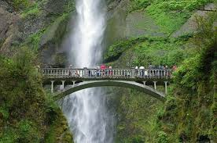
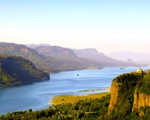
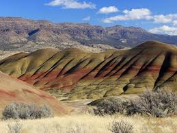
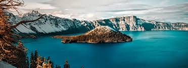

Oregon
Oregon is a North West state in United States of America.It is famous for scenic places to visit.


Places to visit in Oregon
- Crater Lake
- Columbia Gorge
- Mount Hood
- Multnomah Falls
- Mount Bachelor
- Oregon Coast
- Astoria
- Sand dunes
- Grants Pass
- Silver Falls
- Oregon caves
- Painted Hills


Oregon In summer
There are a lot of activities that you can do in summer in Oregon.
The temperatures are perfect for outdoor activities.Some of the activities are
- Scenic Drives
- Hiking along Trails
- Biking
- WhiteWater Rafting
- kayaking
- visiting Oregon Zoo
- Visiting Oregon Wineyards
- Rose garden
- Rock climbing
- Spending time on Beach

To know about more things to do in oregon check this
More about Oregon
Thanks for reading my post!